검색 결과가 없습니다. 검색어를 바꾸거나 검색 초기화를 누르세요.
사용 안내 · 01
LNIS DTN/HDTN 송수신 시험 사용자 설명서
OPERATOR MANUAL · 내부 배포용
GNSS 데이터 전송부터
지연 반영 PVT 비교까지
GNSS RAW · AFS Frame · I/Q Sample
사용 안내 · 02
설명서 적용 범위
송신 PC와 수신 PC에서 LNIS 시험을 준비하고, DTN/HDTN 어댑터를 통해 전달된 데이터와 PVT 결과를 확인하는 절차입니다. 설치 환경에 따라 주소·포트·직렬 포트는 달라집니다.
| 구분 | 이 설명서의 기준 |
|---|---|
| 화면 | 실행 중인 LNIS의 실제 화면을 촬영했습니다. 서버 주소·시험 ID·포트·수치는 촬영 당시 값입니다. |
| 완료 예시 | 저장된 AFS Frame 및 I/Q Sample 시험을 사용했습니다. GNSS RAW 완료 기록이 없어 RAW 완료 화면은 수록하지 않았습니다. |
| 진행 상태 | 운영 시험·수집 상태는 변경하지 않았습니다. 새 I/Q 경로는 90초 파일의 오프라인 생성·추적 자료로 검증합니다. 진행 중 표시와 삭제 확인 절차는 코드에 근거합니다. |
| 현재 방식과 이력 | 이전 시험의 설정·오류·처리 시간은 해당 시험의 기록입니다. 현재 기본값이나 성능 보장값으로 해석하지 않습니다. |
| 문서 사용 | 오프라인 HTML은 목차·검색·이미지 확대를 지원합니다. PDF는 A4 가로 인쇄용입니다. |
| 보안 | 실제 IP·포트·시험 ID·일부 경로가 포함됩니다. 인증 토큰과 비밀번호는 수록하지 않습니다. |
사용 안내 · 03
목차
시작 전 확인 · 04
서비스와 어댑터의 역할
전송용 데이터 구성
상대 어댑터로 전송
지연 반영 PVT 비교
| 연결 | 용도 | 확인 사항 |
|---|---|---|
| 송신 서비스 ↔ 수신 서비스 | 시험 등록, 상태 확인, 비교 자료 요청 | 상대 LNIS 서비스 주소를 입력합니다. 어댑터 주소와 구분합니다. |
| 각 LNIS → 각 어댑터 | 전송 요청 및 연결 상태 확인 | 각 PC가 연결할 어댑터의 IP·포트를 입력합니다. |
| I/Q 공유 폴더 | 어댑터가 .bin 파일을 읽고 전달 | JSON에는 경로 등 파일 정보를 전달합니다. 경로만 맞아도 실제 파일 권한·공유 상태가 별도로 필요합니다. |
| 수신 결과 확인 | testId로 해당 시험에 결과 연결 | 송수신 서비스에서 같은 시험 ID인지 확인합니다. 도착 순서만으로 시험을 구분하지 않습니다. |
시작 전 확인 · 05
접속과 시험 전 준비
| 화면 | 접속 주소 형식 |
|---|---|
| 송신 시험 | http://송신-PC-IP:서비스-포트/lnis/dtntest/sender |
| 수신 시험 | http://수신-PC-IP:서비스-포트/lnis/dtntest/receiver |
| 사용자 설명서 | http://해당-PC-IP:서비스-포트/user-manual/ · 좌측 상단 동작 안내 아이콘 아래 문서 아이콘으로 새 탭 열기 |
| 구조·동작 안내 | http://해당-PC-IP:서비스-포트/dtn-intro |
| 데이터 관리 · 관리자 | http://해당-PC-IP:서비스-포트/lnis/data-manager |
- 각 PC의 LNIS 서비스를 기동한 뒤 브라우저로 접속합니다. 루트 주소(/)에 접속하면 설정된 송신·수신 역할 화면으로 이동합니다.
- 양쪽 서비스 연결 상태와 각 어댑터의 연결 상태를 확인합니다.
- GNSS 입력 파일 또는 직렬 포트를 준비합니다. PVT 비교에는 계산 가능한 GPS L1 C/A 관측과 선행 항법정보가 필요합니다.
- 지연 비교 전 양쪽 시험 기준시각을 확인합니다. I/Q 시험은 공유 폴더·여유 저장 공간·I/Q 사용 설정도 확인합니다.
기본 실행 순서 · 06
빠른 실행 · 파일 입력으로 첫 시험
- 송신 화면의 설정에서 시험 유형과 전송 경로를 선택합니다.
- 상대 수신 서비스와 DTN 어댑터 서버 주소를 확인합니다. 필요한 경우 저장·적용 후 연결 확인을 실행합니다.
- UBX / GRAW 파일에서 파일을 선택하고 파일 적용을 누릅니다. 파일 적용 완료 및 PVT 계산 상태를 확인합니다.
- 설정을 닫고 상단의 다음 전송 요약을 확인합니다. I/Q는 먼저 90초 I/Q 생성 또는 저장된 파일 선택을 완료합니다.
- 전송시험 시작을 누릅니다. 생성된 시험 ID와 어댑터 접수 결과를 확인합니다.
- 수신 화면에서 같은 시험을 선택하고 시험 등록 → 번들 수신 → 복원·PVT 계산 상태를 확인합니다.
- 데이터 일치 여부, PVT 비교 가능 여부, 지연·시계오차·위치·속도 차이를 확인하고 로그와 JSON을 다운로드합니다.
송신 화면 · 07
송신 화면에서 구분할 영역
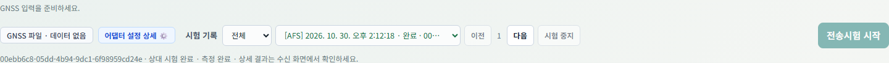
| 영역 | 확인 내용 |
|---|---|
| 연결 상태 / 기준시각 | 송수신 처리기, 어댑터, 시험 상태, 서비스 내부 기준시각과 보정 상태 |
| 다음 전송 | 앞으로 시작할 시험 유형·경로입니다. 클릭하면 설정을 엽니다. |
| 시험 기록 | 선택한 과거 시험의 관측값·PVT·원문·로그를 조회합니다. 다음 시험 설정과 별개입니다. |
| 어댑터 설정 상세 | 선택한 시험을 시작할 때 요청한 값입니다. 라우터에서 실제 반영한 값의 조회 결과는 아닙니다. |
송신 설정 · 08
설정 열기와 적용 시점
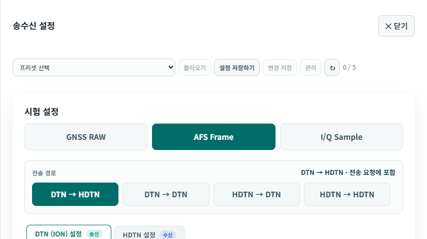
- 우측 하단 설정 또는 다음 전송을 누릅니다.
- GNSS RAW / AFS Frame / I/Q Sample 중 유형을 선택합니다.
- 송신 엔진 → 수신 엔진 순서로 경로를 선택합니다.
- 경로에 사용되는 DTN·HDTN 설정을 확인하고 닫기 또는 Esc로 돌아옵니다.
| 항목 | 적용 |
|---|---|
| 유형·경로 | 다음 시험 요청에 포함됩니다. 기존 시험 조건을 바꾸지 않습니다. |
| DTN/HDTN 값 | 유효한 입력은 해당 브라우저에 자동 저장됩니다. |
| 프리셋 | 이 PC의 서버에 시험 조건을 저장합니다. |
| 연결 주소 | 주소 항목별 저장·적용을 사용합니다. 프리셋에 포함되지 않습니다. |
송신 설정 · 09
시험 유형 선택
| 시험 유형 | 어댑터로 전달하는 계산 입력 | 수신 처리 | 선택 기준 |
|---|---|---|---|
| GNSS RAW | 의사거리를 가상 송신 시각으로 치환한 1 Epoch JSON | 변환 RAW 해석 → 의사거리 재계산 → PVT | 프레임·RF 처리 없이 데이터 전송과 공통 지연 계산을 확인할 때 |
| AFS Frame | GPS 위성별 6,000-bit AFS 프레임을 포함한 JSON | AFS 복호 → 입력 복원 → 의사거리 재계산 → PVT | 프레임 구성·복원까지 포함해 시험할 때 |
| I/Q Sample | I/Q 파일 경로·해시 등 manifest JSON과 별도 .bin 파일 | 파일 검증 → RF 추적·프레임 복호 → 공통 지연 PVT | 신호 생성·추적·복호 경로까지 포함할 때 |
세 유형의 지연 반영 PVT 계산은 기본 동작입니다. 별도의 지연 반영 체크박스는 사용하지 않습니다. GNSS RAW는 업로드한 UBX 전체를 그대로 보내는 모드가 아닙니다.
송신 설정 · 10
전송 경로와 연결 주소
| 선택 경로 | 설정 탭의 적용 대상 |
|---|---|
| DTN → HDTN | DTN: 송신 / HDTN: 수신 |
| DTN → DTN | DTN: 송·수신 |
| HDTN → DTN | HDTN: 송신 / DTN: 수신 |
| HDTN → HDTN | HDTN: 송·수신 |
주소 입력 순서
- 상대 수신 LNIS의 IP와 서비스 포트를 입력하고 저장·적용합니다.
- DTN 어댑터 서버 주소에
http://어댑터-IP:포트형식으로 입력합니다. - 각 연결 확인 결과를 구분합니다. LNIS 간 연결 성공과 어댑터 연결 성공은 별개입니다.
어댑터 주소는 기본값을 환경 설정에서 읽고, 화면에서 저장한 주소를 해당 브라우저에 적용합니다. 송신 PC와 수신 PC가 서로 다른 어댑터를 사용하면 각 화면에 각자의 주소를 설정합니다.
송신 설정 · 11
어댑터 연결 확인
| 표시 | 의미 | 다음 조치 |
|---|---|---|
| 정상연결 · 녹색 | health 응답의 status가 ready | 전송 준비 조건을 확인합니다. 상대 수신 완료 표시는 아닙니다. |
| 시험대기 · 노란색 | health 응답의 status가 busy | 어댑터 작업 상태를 확인하고 필요하면 대기합니다. |
| 연결실패 · 빨간색 | 응답 없음, 연결 오류 등 정상 상태를 확인하지 못함 | IP·포트·어댑터 실행·방화벽·응답 내용을 확인합니다. |
화면에서 약 10초 간격으로 상태를 요청합니다. 연결 확인은 수동 재조회입니다. 송신 설정의 상세 보기에는 요청 주소·응답 상태·처리 시간·마지막 확인 및 개발자 JSON 원문이 표시됩니다. 수신 화면은 간단한 상태 표시를 제공합니다.
송신 설정 · 12
프리셋 저장·불러오기·수정
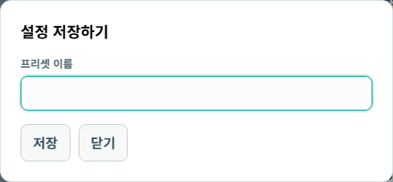
- 시험 유형·전송 경로·DTN/HDTN 값을 먼저 설정합니다.
- 설정 저장하기를 누르고 40자 이내 이름을 입력해 저장합니다. 최대 5개입니다.
- 목록에서 프리셋을 선택하고 불러오기를 누릅니다. 다음 전송 요약과 각 값을 확인합니다.
- 값을 수정한 후 변경 저장으로 선택한 프리셋을 갱신합니다.
- 관리에서 이름 변경 또는 삭제를 수행합니다. 다른 화면에서 수정되었다는 메시지가 나오면 새로고침 후 다시 확인합니다.
| 저장 대상 | 포함 여부 |
|---|---|
| 시험 유형 / 송수신 엔진 / GPS 계산 대상 / DTN·HDTN 파라미터 | 포함 |
| GNSS 입력 파일 / 저장된 I/Q 선택 / COM 연결 상태 | 미포함 · 사용 시 별도 준비 |
| 상대 서비스·어댑터 주소 / 인증 토큰 / 시험 이력 | 미포함 |
송신 설정 · 13
HDTN 파라미터
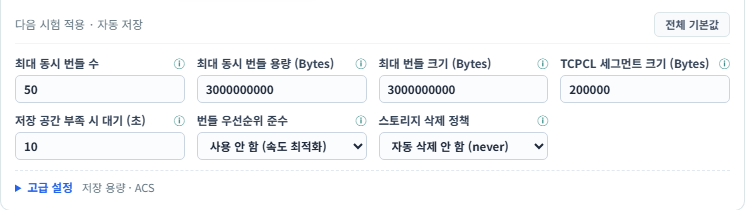
| 입력 항목 / JSON 키 | 초기 기본값 | 의미 |
|---|---|---|
| 최대 동시 번들 수 / maxNumberOfBundlesInPipeline | 50 개 | 동시에 유지할 번들 수의 요청 한도 |
| 최대 동시 번들 용량 / maxSumOfBundleBytesInPipeline | 3,000,000,000 Bytes | 파이프라인 누적 바이트 한도 |
| 최대 번들 크기 / maxBundleSizeBytes | 3,000,000,000 Bytes | 단일 번들 크기 관련 요청값 |
| TCPCL 세그먼트 크기 / tcpclMaxSegmentSizeBytes | 200,000 Bytes | TCPCL 세그먼트 크기 |
| 저장 공간 부족 시 대기 / neighborDepletedStorageDelaySeconds | 10 초 | 상대 저장 공간 부족 시 대기 요청 |
| 우선순위 / enforceBundlePriority | 사용 안 함 · false | 번들 우선순위 적용 요청 |
| 삭제 정책 / storageDeletionPolicy | never | 자동 삭제 안 함 요청 |
송신 설정 · 14
HDTN 고급 설정과 입력 제한
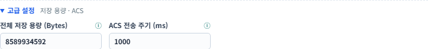
| 항목 | 초기 기본값 | 용도 |
|---|---|---|
| 전체 저장 용량 / totalStorageCapacityBytes | 8,589,934,592 Bytes | 라우터 저장 용량 요청 |
| ACS 전송 주기 / acsSendPeriodMilliseconds | 1,000 ms | 집계 보관 신호의 전송 주기 요청 |
- 경로에 HDTN이 포함되는지 확인하고 HDTN 설정 탭을 엽니다.
- 항목의 ⓘ에 마우스를 올려 설명을 확인합니다. 값은 정수로 입력합니다.
- 기본 상태로 복원하려면 전체 기본값을 누릅니다. 고급 항목도 함께 초기화됩니다.
- 전송 후 어댑터 설정 상세에서 실제 요청에 포함된 값을 확인합니다.
삭제 정책 선택: never / on_forward / on_delivery / DELETE_AFTER_FORWARDING. 선택 이름은 어댑터에 보내는 요청값입니다. 이 화면에서 디스크 삭제 여부나 Custody 동작을 직접 확인하는 것은 아닙니다. 현재 화면에는 LTP 최대 수신 패킷 크기 입력란이 없습니다.
송신 설정 · 15
DTN(ION) 파라미터
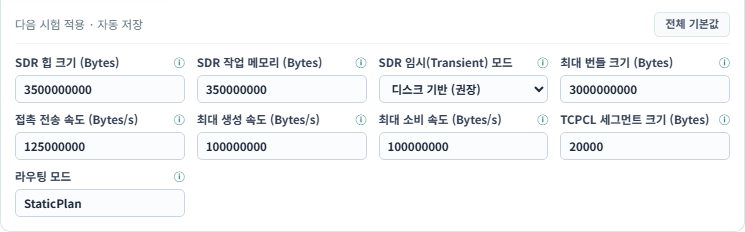
| 입력 항목 / JSON 키 | 초기 기본값 | 용도 |
|---|---|---|
| SDR 힙 / sdrHeapSizeBytes | 3,500,000,000 Bytes | SDR 저장 영역 크기 요청 |
| SDR 작업 메모리 / sdrWorkingMemorySizeBytes | 350,000,000 Bytes | 작업 메모리 크기 요청 |
| SDR 임시 모드 / sdrTransientMode | 디스크 기반 · false | 일시적 메모리 운용 여부 |
| 최대 번들 / maxBundleSizeBytes | 3,000,000,000 Bytes | 번들 크기 관련 요청값 |
| 접촉 전송 속도 / contactRateBytesPerSec | 125,000,000 Bytes/s | 접촉 구간의 전송률 요청 |
| 최대 생성 / 최대 소비 속도 | 각 100,000,000 Bytes/s | 생성·소비 전송률 요청 |
| TCPCL 세그먼트 / tcpclMaxSegmentSizeBytes | 20,000 Bytes | 세그먼트 크기 |
| 라우팅 모드 / routingMode | StaticPlan | 라우팅 모드 문자열 |
GNSS 입력 · 16
UBX / GRAW 파일 적용
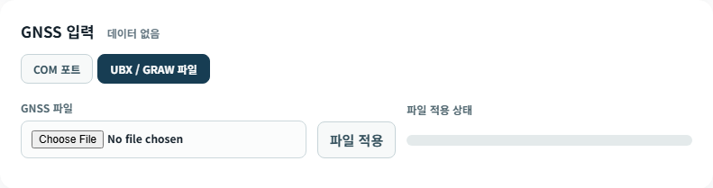
- 송신 설정에서 UBX / GRAW 파일을 선택합니다.
- GNSS 파일에서 .ubx 또는 .graw 파일을 선택합니다.
- 파일 적용을 누르고 적용 상태가 완료될 때까지 기다립니다.
- 설정을 닫고 관측 시점, PVT 계산 상태, GPS L1 관측·항법정보 수를 확인합니다.
| 표시 | 의미 |
|---|---|
| 파일 적용 상태 | 업로드와 입력 검증의 진행 상태입니다. 외부 DTN 전송률이 아닙니다. |
| GNSS 기준시간 | 선택한 RAWX Epoch의 GPS Week / TOW입니다. 파일 생성 시각·PC 시각과 다릅니다. |
| 관측 시점 | 지연 시험에 사용할 유효한 첫 Epoch를 자동 선택합니다. 화면의 시점 선택으로 관측 자료를 확인합니다. |
| 파일 수집 범위 | 입력 파일에는 여러 Epoch와 여러 위성군이 있을 수 있습니다. 시험 계산 입력은 선택된 1 Epoch와 필요한 선행 정보로 구성됩니다. |
GNSS 입력 · 17
COM 포트 연결과 장비 설정
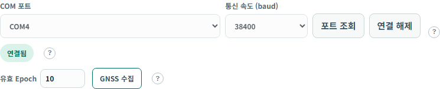
- u-center 등 다른 프로그램이 같은 COM 포트를 점유하고 있으면 연결을 해제합니다.
- COM 포트 → 포트 조회에서 장비 포트를 선택합니다.
- 장비 출력 속도에 맞는 통신 속도를 선택합니다. 화면 초기값은 38400 baud입니다.
- 장비가 요구할 때만 DTR·RTS를 설정하고 연결합니다.
- 연결 상태와 시간 수신 상태를 각각 확인합니다. 수집은 별도 1 Epoch 수집으로 시작합니다.
| 항목 | 의미 |
|---|---|
| DTR | Data Terminal Ready · PC의 통신 준비 신호 |
| RTS | Request To Send · PC의 송신 요청 신호 |
| 연결됨 / 시간 미확인 | 포트는 연결됐지만 유효한 GNSS 시간을 아직 확보하지 못했을 수 있습니다. |
| 포트 없음 | 장치 인식, Windows 직렬 브릿지, COM 점유 상태 및 설치 설정을 확인합니다. |
GNSS 입력 · 18
1 Epoch 수집과 계산 조건 확인
- COM 연결 후 설정을 닫습니다. 1 Epoch 수집 버튼을 확인합니다.
- 수집을 시작하면 선행 항법정보와 유효한 지구 PVT 한 시점을 확보한 뒤 자동 종료합니다. 최대 수집 시간은 120초입니다.
- 수집 결과 메시지와 관측값 표의 GPS L1 입력 대상, SF1~3 준비, 실제 PVT 사용 위성 수를 확인합니다.
- 계산 조건을 충족하지 못한 경우 이 데이터 사용 / 다시 수집 / 사용 안 함 중 선택합니다.
- PVT 비교가 목적이면 조건을 보완해 다시 수집합니다. 전송만 확인할 목적이라면 계산 불가 사유를 기록하고 확보한 데이터를 사용합니다.
| 조건 | 확인 방법 |
|---|---|
| 관측과 항법정보 | RAWX 관측이 있어도 같은 GPS 위성의 유효한 LNAV SF1~3이 필요합니다. |
| 위성 수 | 3차원 위치와 시계오차 추정에는 최소 4개 위성 조건이 필요합니다. 최종 사용 수는 배치·유효성 검사에 따라 달라집니다. |
| 신호 종류 | 현재 PVT 계산은 GPS L1 C/A를 사용합니다. 다른 위성군·신호의 수신 기록은 별도로 표시합니다. |
| 장비 시간 | 시간 상세의 GNSS 정확도는 수신기 측정 추정치이며 양쪽 PC의 동기화 정확도를 보장하지 않습니다. |
시각 준비 · 19
기준시각 확인과 시간 맞추기
- 송신·수신 화면의 기준시각과 보정 상태를 확인합니다.
- 상세에서 시각 원천, 보정량, 보정 시점 및 시계 변경 정보를 확인합니다.
- 필요하면 시간 맞추기를 눌러 제안된 원천·보정량을 검토합니다.
- 확인 후 적용하고 양쪽 상태를 다시 확인합니다. 지연 시험 중에는 시각 원천·보정 상태를 바꾸지 않습니다.
| 상태 | 해석 |
|---|---|
| PC 시각 · 미보정 (SYSTEM) | 현재 PC 시각을 사용하는 상태 |
| GNSS 근사보정 (GNSS_USB) | 로컬 GNSS 입력을 이용한 서비스 내부 시각 보정 |
| 상대 GNSS 근사보정 (PEER_GNSS) | 상대 서비스의 GNSS 기준을 활용한 근사보정 |
| 공통 NTP 근사보정 (NTP) | 공통 시각 기준을 활용한 근사보정 |
관측값 확인 · 20
송신 원본 GNSS 관측값 읽기
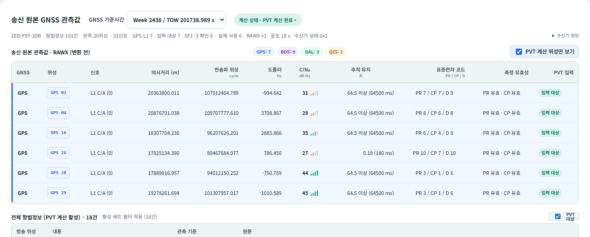
| 영역 | 확인할 내용 |
|---|---|
| GNSS 기준시간 | 현재 표시하는 Epoch의 GPS Week / TOW. 여러 Epoch 입력에서는 시점을 바꾸어 조회합니다. |
| 계산 상태 | PVT 완료 또는 계산 불가 사유. 파일 적용·관측 수신과 별도입니다. |
| 요약 수 | 전체 관측 신호, GPS L1, 입력 대상, SF1~3 준비, RTKLIB 실제 사용 위성을 구분합니다. |
| RAWX / 항법정보 | 위성·신호별 측정값과 방송 항법 메시지를 함께 확인합니다. 계산 위성 필터가 있으면 표시 범위를 바꿀 수 있습니다. |
관측값 확인 · 21
RAWX 필드와 PRN
| 표시 | 단위 / 의미 | 사용 목적 |
|---|---|---|
| GNSS / 위성 / 신호 | 위성군 + 위성번호 + 신호 ID | GPS 03은 GPS PRN 3입니다. 다른 위성군의 같은 숫자와 구분합니다. |
| 의사거리 | m · 수신 시각과 신호 전파시간을 포함한 거리 관측 | 송신부 가상 송신 시각 산출의 원본 입력 |
| 반송파 위상 | cycle | 수신 측정 정보 표시. 현재 SPP 위치 계산의 의사거리와 구분 |
| Doppler | Hz · 주파수 변화 측정 | 속도 계산 입력. 공통 지연 계산에서도 원본값 유지 |
| C/N₀ | dB-Hz · 신호 품질 지표 | 측정 품질 확인 및 계산기 가중·선별에 관련 |
| 추적 유지 / Lock | 초 · 연속 추적 시간 | 추적 안정 상태 확인. 포화 표시는 최소 지속시간 의미 |
| 표준편차 코드 PR / CP / D | 의사거리 / 반송파 / Doppler 오차등급 코드 | m 또는 Hz 실수 오차값과 구분 |
| 측정 유효성 / PVT 입력 | PR 유효, CP 유효 등 / 입력 대상 여부 | 관측 상태와 계산 대상 여부를 따로 확인 |
RAWX는 한 Epoch 안에 여러 위성·여러 신호가 들어옵니다. 위성 하나가 여러 신호 행을 만들 수 있으므로 “행 수 = 서로 다른 위성 수”로 계산하지 않습니다.
관측값 확인 · 23
수신기 정보와 입력 상태
| 정보 | 확인 내용 |
|---|---|
| 수신기 정보 | 송신 원본 관측값 제목 줄 우측의 수신기 정보에서 입력에 포함된 모델·펌웨어·프로토콜 등을 확인합니다. |
| MON-VER | UBX에 기록된 장치 식별 정보의 출처입니다. 해당 메시지가 없으면 정보를 표시하지 못할 수 있습니다. |
| Epoch / 수집 기간 | 입력에 포함된 관측 시점 수와 범위를 확인합니다. 1 Epoch 전송 범위와 구분합니다. |
| 지원 위성군 | 장비가 보고한 지원 정보입니다. 실제 관측한 위성군이나 현재 PVT 계산 지원 범위와 다릅니다. |
| 파일과 장비 | UBX 파일의 수신기 정보는 파일을 기록한 장비 정보입니다. 지금 연결된 COM 장비와 같다고 단정하지 않습니다. |
실제 입력 예시 real-gnss-source.ubx에는 ZED-F9T-20B, TIM 2.25, Protocol 29.25 정보가 포함됩니다. 장비·파일을 바꾸면 값도 달라집니다.
원본 필드가 더 필요한 경우 관측값 섹션의 저장된 전체 필드 보기 · JSON을 펼칩니다. 화면 표는 주요 정보를 요약한 것으로, 전송 JSON 원문과 별도의 입력 조회입니다.
유형별 실행 · 24
GNSS RAW 시험 실행
- 설정에서 GNSS RAW와 전송 경로를 선택합니다.
- GNSS 파일 적용 또는 COM 수집을 완료하고 선택 Epoch와 Reference 계산 상태를 확인합니다.
- 설정을 닫고 다음 전송 · RAW를 확인합니다.
- 전송시험 시작을 누른 후 시험 ID와 어댑터 응답을 확인합니다.
- 수신 화면에서 같은 ID를 선택하고 RAW 해석·지연 반영 결과 및 비교 자료 수신 상태를 확인합니다.
| 단계 | 현재 처리 |
|---|---|
| 송신 | 원본 의사거리 Pᵢ로 T*ᵢ = S − Pᵢ/c를 계산합니다. RAW 관측의 pseudorangeMeters 대신 transmitAt을 전달합니다. |
| 전송 | 변환한 관측과 항법정보를 JSON으로 전달합니다. 원본 UBX 전체·원본 의사거리·Reference를 이 경로의 계산 입력으로 보내지 않습니다. |
| 수신 | T*ᵢ와 본문 수신 완료 시각 R로 P′ᵢ를 계산합니다. 원본 Doppler 등 유지된 입력으로 PVT를 계산합니다. |
| 비교 | 송신 서비스에서 별도로 조회한 비교 자료와 대조합니다. 수신측 계산을 Reference로 대체하지 않습니다. |
유형별 실행 · 25
AFS Frame 시험 실행
- 설정에서 AFS Frame과 전송 경로를 선택합니다.
- GNSS 입력의 GPS L1 관측과 선행 항법정보, Reference 상태를 확인합니다.
- 전송시험 시작을 누릅니다. 송신에서 가상 송신 시각을 구성하고 위성별 AFS를 생성합니다.
- 수신에서 프레임 복원·검증 후 PVT 계산이 완료되는지 확인합니다.
- 관측값의 보정 송신 시각·변환 후 의사거리와 Reference 비교 결과를 확인합니다.
| AFS 물리 프레임 | LNIS의 현재 사용 |
|---|---|
| 6,000 bits / 750 bytes | 동기와 부호화·인터리빙된 SB1~4로 구성됩니다. |
| SB2 | 통합 항법정보와 보충 데이터를 구성합니다. |
| SB3 | 현재 LNIS 확장의 미사용 영역은 0101 패턴으로 채웁니다. |
| SB4 | 선택 Epoch의 가상 송신 시각·관측 시각·Doppler·C/N₀·유효성 등 계산 입력을 구성합니다. 원본 의사거리는 넣지 않습니다. |
유형별 실행 · 26
I/Q Sample 생성과 저장 파일 선택
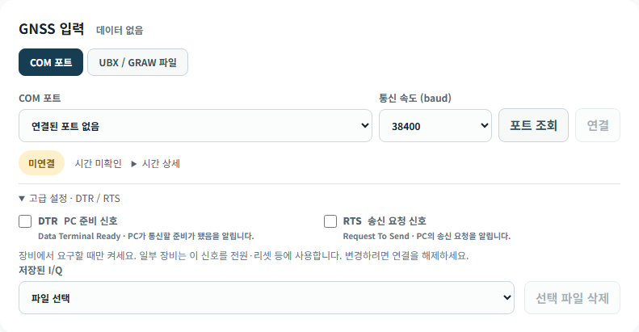
- 설정에서 I/Q Sample을 선택하고 GNSS 입력을 준비합니다.
- 새 파일을 만들려면 설정을 닫고 90초 I/Q 생성을 실행합니다.
- 생성 상태·진행률·결과 경로를 확인합니다. 필요하면 생성 취소를 사용합니다.
- 기존 파일은 설정의 저장된 I/Q에서 선택합니다. 파일에 연결된 기준 PVT·원본 정보가 있는지 확인합니다.
- 선택 파일과 다음 전송 유형이 I/Q인지 확인하고 전송합니다.
| 항목 | 내용 |
|---|---|
| 파일 규모 | 90초 · 12 MHz · 약 2.16 GB. 공유 폴더와 생성 공간을 확보합니다. |
| 생성 입력 | 항법정보가 준비된 GPS 위성별 AFS를 생성합니다. 생성 가능한 위성이 4개 미만이면 사유를 확인합니다. SB4와 같은 시작 의사거리·Doppler로 파형을 보정하고 이후 궤도·이동 변화를 유지합니다. |
| 프레임 | AFS 시험과 같은 구성기를 사용하며 위성별 PRN 채널을 유지합니다. |
| 선택 파일 삭제 | 저장 파일을 실제로 삭제하는 동작입니다. 사용 중·시험 참조 보호 여부와 메시지를 확인합니다. |
유형별 실행 · 27
I/Q 공유 폴더와 파일 전달
경로·크기·해시 JSON
DTN/HDTN 파일 전달
검증 후 RF 추적
| 확인 위치 | 확인할 내용 |
|---|---|
| 송신 저장 위치 | LNIS가 생성하는 파일과 어댑터가 읽는 경로가 같은 실제 파일을 가리켜야 합니다. |
| 수신 저장 위치 | 수신 LNIS에서 전달받은 경로를 읽을 수 있어야 합니다. 송신 PC의 경로를 그대로 열 수 있다는 가정은 금물입니다. |
| 경로와 권한 | 컨테이너 /exchange 경로와 호스트·어댑터의 Windows 경로는 다를 수 있습니다. 마운트와 공유 권한을 확인합니다. |
| 전송 본문 | REST에는 파일 정보를 전달합니다. 대용량 .bin 내용을 JSON 문자열로 넣지 않습니다. |
| 검증 중 파일 | 현재 처리는 공유 원본 파일이 처리 중 변경되지 않는 운용을 전제로 합니다. 복호 완료 전 이동·덮어쓰기·삭제하지 않습니다. |
송신 결과 확인 · 28
송신 Reference PVT와 시험 이력
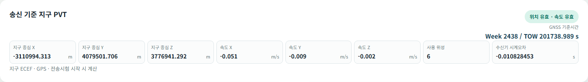
| 표시 | 해석 |
|---|---|
| 지구 중심 X/Y/Z | ECEF 좌표(m). 위도·경도 값이 아닙니다. |
| 속도 X/Y/Z | ECEF 축 방향 속도(m/s). 원본 Doppler 기반 계산 결과입니다. |
| 사용 위성 | 해당 해에 실제 사용된 위성 수 |
| 수신기 시계오차 | PVT 계산기의 시간 오프셋(s). PC의 현재 시각 오차와 구분합니다. |
| 시험 기록 선택 | 선택한 시험 당시의 기준 결과를 조회합니다. 다음 전송용 새 입력을 대신하지 않습니다. |
Reference는 장비의 UBX-NAV-PVT 값을 그대로 표시한 것이 아니라 LNIS가 원본 관측으로 계산한 기준 해입니다. 송신 상세 로그의 Reference와 화면의 Reference는 같은 시험 ID·같은 관측 Epoch·같은 유효 결과를 기준으로 비교합니다. 매우 작은 수는 과학 표기와 소수 표기로 다르게 보일 수 있습니다.
수신 화면 · 29
수신 화면과 처리 단계
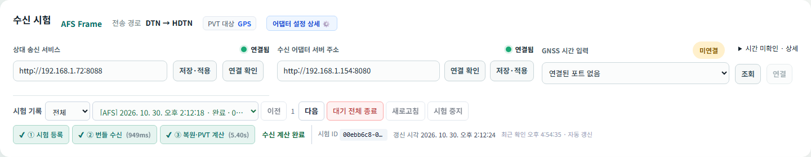
| 영역 | 조작 / 확인 |
|---|---|
| 수신 시험 / 전송 경로 | 선택한 시험의 유형과 실제 기록된 송수신 엔진입니다. |
| 상대 송신 서비스 | 송신 LNIS 주소를 저장·적용하고 연결 확인합니다. 비교 자료·상태 교환에 사용합니다. |
| 수신 어댑터 서버 주소 | 이 PC의 어댑터 health 확인 주소입니다. 상대 LNIS 주소와 다릅니다. |
| GNSS 시간 입력 | 수신측 서비스 기준시각용 장비 연결입니다. 송신 원본 관측값을 수집하는 버튼과 구분합니다. |
| 시험 등록 → 번들 수신 → 복원·PVT 계산 | 등록, 본문 수신, 계산 단계를 따로 확인합니다. 처리 시간은 단계별 기록입니다. |
수신 결과 확인 · 30
수신 원본 GNSS 관측값
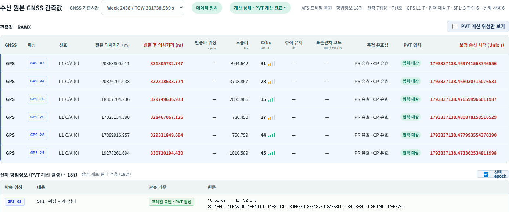
| 표시 | 출처와 의미 |
|---|---|
| 수신 원본 관측값 | DTN/HDTN 경로로 실제 전달받은 계산 입력을 해석한 내용입니다. 송신 비교 원본을 대신 표시하는 영역이 아닙니다. |
| 보정 송신 시각 · Unix s | 송신이 원본 의사거리로 계산한 가상 시각. 변경된 계산 입력이므로 빨간색으로 구분합니다. |
| 원본 / 변환 후 의사거리 | 원본을 조회할 수 있을 때 비교용으로 표시합니다. 변환 후 값은 빨간색입니다. 빨간색 자체가 오류 판정은 아닙니다. |
| Doppler / C/N₀ | 프레임·변환 RAW에 포함되어 전달된 관측값. 임의로 다시 측정한 값이 아닙니다. |
| 데이터 일치 / PVT 상태 | 의도적 치환·생략을 제외하고 비교 가능한 필드를 확인합니다. PVT 측정 완료와 별도 상태입니다. |
수신 결과 확인 · 31
I/Q RF 관측값과 지연 비교
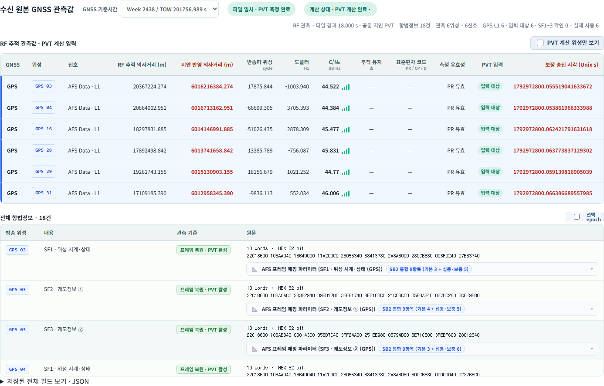
| 표시 묶음 | 계산·진단 역할 |
|---|---|
| RF 추적 관측값 · PVT 계산 입력 | 새 I/Q 시험은 RF 추적 의사거리·Doppler·C/N₀와 CRC 통과 프레임의 항법정보를 계산 입력으로 사용합니다. |
| 지연 반영 의사거리 | RF 의사거리에 c×송수신 지연을 더한 값입니다. RAW·AFS는 전달된 보정 송신 시각으로 재계산합니다. |
| RF 추적 의사거리 / Doppler / C/N₀ / 반송파 | 신호 추적기가 파일에서 얻은 값입니다. 계산 가능한 첫 RF Epoch를 사용하며 같은 관측으로 지연 미적용·적용 PVT를 계산합니다. |
| RF 시점 | 파일 내 초(s) 단위입니다. 선택된 계산 시점을 표시하고 전체 RF 관측은 보고서 JSON에 보관합니다. 과거 이력의 RF 시점 선택은 기존 진단 표시입니다. |
수신 결과 확인 · 32
송신 비교 자료 확인
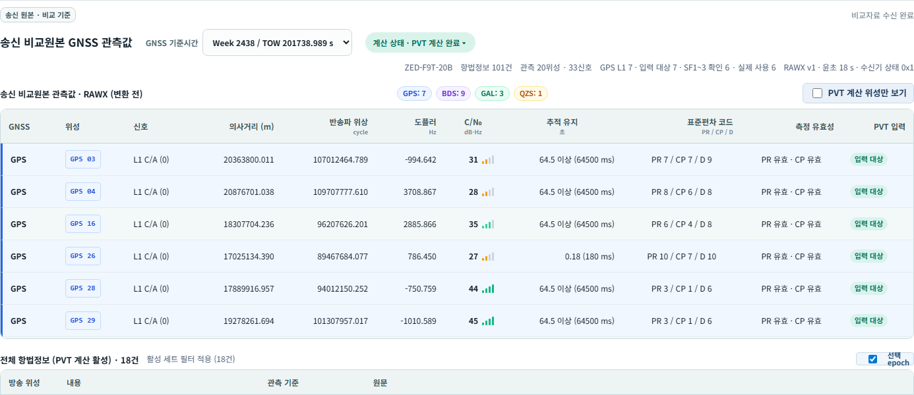
- 수신 시험 ID와 결과 상태를 확인합니다.
- 송신 원본 · 비교 기준을 펼쳐 비교자료 수신 상태를 확인합니다.
- 원본 GNSS 관측값과 Reference PVT가 같은 시험·Epoch인지 확인합니다.
- 자료 조회가 실패하면 다시 받기를 사용하고 상대 송신 서비스 연결·기록 보존 상태를 확인합니다.
RAW·AFS에서는 수신측 자체 계산 후 송신 서비스에서 비교 자료를 별도 조회합니다. 이 경로는 DTN/HDTN 어댑터 전송 경로와 구분됩니다. I/Q의 현재 manifest에는 비교용 Reference가 포함되며, 수신 PVT 계산 입력을 대신하지 않습니다.
수신 결과 확인 · 33
PVT 결과에서 확인할 순서
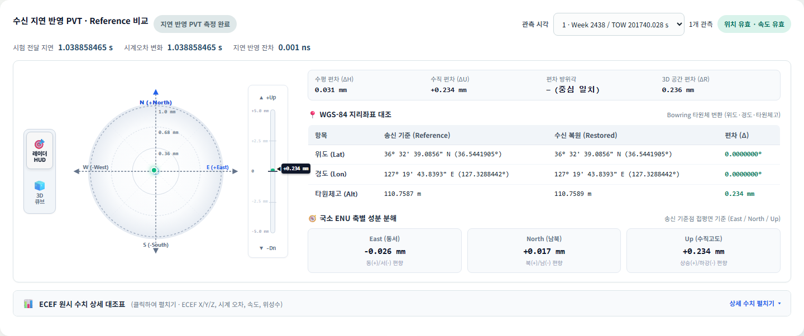
위치·속도 유효성, Reference 확보, 시간 조건과 오류 사유를 확인합니다.
측정 지연, Clock Bias 증가량, 두 값의 잔차를 함께 확인합니다.
좌표·속도 차이와 사용 위성을 기록합니다. 실제 위치 정확도와 구분합니다.
수신 결과 확인 · 34
위치·속도 차이 시각화 조작
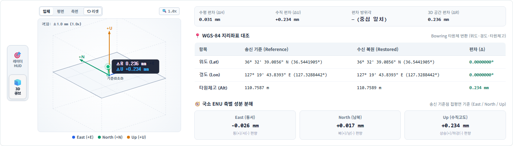
| 조작 | 확인 내용 |
|---|---|
| 레이더 HUD | Reference를 원점으로 수평 East/North 차이와 수직 Up 차이를 확인합니다. 축·눈금·단위를 함께 읽습니다. |
| 3D 큐브 | 드래그로 회전하고 휠로 확대·축소합니다. 입체 / 평면 / 측면 시점과 리셋을 사용합니다. |
| WGS-84 / ENU 요약 | 지리좌표와 기준점 주변 차이를 구분합니다. ENU는 ECEF 차이를 국소 방향으로 표현한 값입니다. |
| 위치·속도 표시 | 그림의 크기만 보지 말고 표시 수치·축 배율·m/mm 등 단위를 확인합니다. |
수신 결과 확인 · 35
ECEF 상세 수치와 시간 잔차
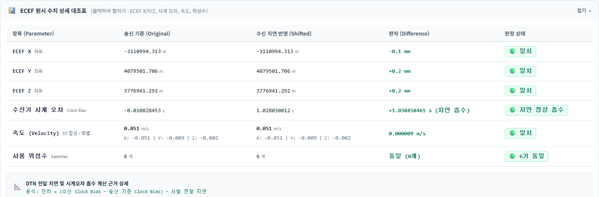
| 수치 | 비교 방법 |
|---|---|
| X/Y/Z · m | 송신 Reference와 수신 해를 같은 ECEF 축에서 대조합니다. |
| Vx/Vy/Vz · m/s | 속도 성분과 차이를 확인합니다. Doppler가 같아도 해·위성 방향에 따라 작은 차이가 생길 수 있습니다. |
| 수신기 시계오차 · s | 수신값 − Reference값을 계산한 증가량을 봅니다. 원래 Reference 시계오차가 0일 필요는 없습니다. |
| 지연 잔차 · s | Clock Bias 증가량과 측정 지연의 차이를 확인합니다. 0에 가까운지와 계산 유효성을 함께 봅니다. |
| 사용 위성 / 관측 시각 | 서로 다른 위성 집합·Epoch 결과를 섞어 비교하지 않습니다. |
결과 해석 · 36
공통 지연과 의사거리 계산
수신부 P′ᵢ = c × (R − T*ᵢ) = Pᵢ + c × (R − S)
측정 지연 Δt = R − S · c = 299,792,458 m/s
| 기호 / 시각 | 뜻 |
|---|---|
| Pᵢ / t₀ | RAW·AFS는 원본 Epoch, 새 I/Q는 선택 RF Epoch의 의사거리 / GNSS 관측 시각 |
| S | 송신 서비스가 시험 시작을 접수한 시각 |
| T*ᵢ | 시험 시작 시점에 맞춘 가상 위성 송신 시각. 실제 위성의 새 궤도 위치를 계산한 시각이 아닙니다. |
| R | 수신 서비스가 요청 본문을 모두 받은 시각. I/Q는 파일을 다 복호한 시각이 아닙니다. |
| Δt | 시작 접수부터 본문 수신 완료까지. 전송 준비·어댑터 대기 등을 포함하며 수집 후 시작 전 대기와 수신 후 복호·계산 시간은 제외합니다. |
수신측 계산의 관측 시각도 GNSS 시간축에서 Δt만큼 이동합니다. 궤도정보·Doppler·C/N₀ 등 유지 대상은 그대로 사용합니다. 새 I/Q는 RF 의사거리로 S 기준 가상 송신 시각을 역산하고 같은 지연 모델을 적용합니다. Doppler는 RF 추적값을 유지합니다.
결과 해석 · 37
지연이 큰데 위치 차이가 작은 이유
P′ᵢ ≈ 위성까지의 거리 + c × (수신기 시계오차 + Δt)
위치 계산기는 위치와 수신기 시계오차를 함께 추정합니다. 모든 위성에 같은 거리 증가분이 들어오면 위치를 크게 옮기는 대신 시계오차를 증가시켜 관측값을 설명할 수 있습니다. 이 시험은 그 증가량이 측정한 공통 지연과 얼마나 일치하는지 확인합니다.
| 결과 | 해석 시 확인할 사항 |
|---|---|
| 위치 차이가 작고 Clock Bias 증가량 ≈ Δt | 공통 오차가 주로 시계오차 항으로 추정되는 결과와 부합합니다. 잔차·유효성·사용 위성을 함께 확인합니다. |
| 속도 차이가 작음 | 원본 Doppler를 유지하므로 대체로 기대할 수 있습니다. 정확히 0이라는 조건은 아닙니다. |
| 위치 차이 또는 잔차가 큼 | 관측·항법정보·동일 Epoch 여부·시각 보정·계산 유효성을 먼저 확인합니다. |
| 비교 불가 | 실패 또는 이상 결과와 구분합니다. 시계 변경·음수 지연·입력 부족 등 사유를 확인합니다. |
결과 해석 · 38
I/Q 파일 일치와 처리 시간
| 단계 | 현재 확인 방식 | 시간에 영향을 주는 항목 |
|---|---|---|
| 수신 검증 | 파일 크기와 기대 SHA-256을 대조합니다. 전체 해시는 수신 전처리에서 한 번 계산합니다. | 파일 크기, 공유 폴더·디스크 읽기 속도 |
| RF 추적·프레임 복호 | 검증한 공유 파일을 읽어 위성별 프레임을 복원합니다. | 90초 신호 길이, CPU, 추적 위성 수, 파일 접근 속도 |
| 복호 후 확인 | 파일 크기·수정 시각·파일 식별 정보의 변화를 확인합니다. 전체 SHA-256을 다시 읽지 않습니다. | 공유 파일의 변경 여부 |
| 최종 표시 | 파일 일치와 PVT 비교 상태를 별도로 표시합니다. 새 I/Q의 주 비교는 동일 RF Epoch의 지연 적용 전후 결과입니다. | Reference 확보 및 PVT 계산 조건 |
본문 수신 시간과 수신 후 처리 시간은 다릅니다. 파일이 도착한 뒤 복호가 오래 걸려도 그 전체 시간을 공통 지연 Δt에 더하지 않습니다. 진행 메시지에서 검증 중인지 추적·계산 중인지 먼저 확인합니다.
시험 관리 · 39
여러 시험 전송과 이력 조회
- 첫 시험을 전송하고 어댑터 접수 상태를 확인합니다.
- 수신 대기 상태만 남으면 다음 시험 조건을 준비하고 전송시험 시작을 다시 누릅니다. 각 요청은 별도의 시험 ID를 사용합니다.
- 이력의 [RAW] / [AFS] / [I/Q], 시작 시각, 상태와 ID 앞부분으로 구분합니다.
- 과거 시험은 목록에서 선택합니다. 이전·다음으로 페이지를 이동하고 필요하면 수신 대기 필터를 사용합니다.
- 어댑터가 묶어서 또는 순서가 바뀌어 전달해도 testId가 같은 시험에 결과를 연결합니다.
| 상태 | 운영 의미 |
|---|---|
| 수신 대기 | 도착을 기다리는 상태입니다. 단순 대기에 10분 만료를 적용하지 않습니다. |
| 준비 / 계산 중 | 한 시험의 실제 처리 단계입니다. RAW·AFS 10분, I/Q 20분 등 처리 제한은 수신 대기 제한과 별개입니다. |
| 완료 / 비교 불가 / 실패 / 종료 | 상태와 상세 메시지를 함께 확인합니다. “완료 · 불일치” 표시가 있으면 불일치 내용을 확인합니다. |
시험 관리 · 40
시험별 중지와 대기 전체 종료
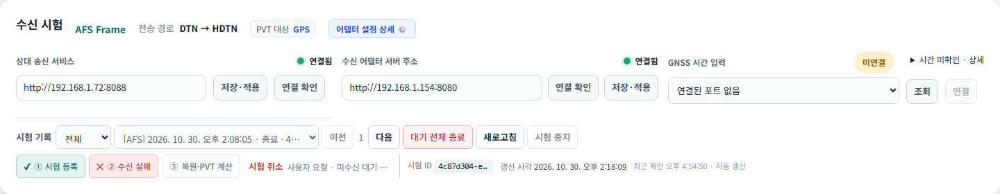
| 기능 | 대상 / 조작 | 처리 결과 |
|---|---|---|
| 시험 중지 / 대기 종료 | 이력에서 시험을 선택 → 버튼 → 확인 | 해당 시험의 대기·처리를 종료합니다. 기록은 유지합니다. |
| 대기 전체 종료 | 수신 대기 시험 확인 → 버튼 → 대상 수 검토 → 확인 | 목록 페이지와 관계없이 확인 시점의 미수신 대기 시험을 대상으로 합니다. |
| 종료 확인 중 | 상대 LNIS에 미수신 여부·종료 상태 확인이 필요한 상태 | 응답이 안 오면 종료 확인 대기가 남을 수 있습니다. 상세 메시지와 연결 상태를 확인합니다. |
| 경합 시 제외 | 확인 이후 이미 수신·계산 단계로 넘어간 시험 | 전체 종료 대상에서 제외될 수 있습니다. 완료 후 취소·제외·대기 건수를 확인합니다. |
중지 버튼은 LNIS 시험 상태에 대한 동작입니다. 어댑터가 이미 접수한 번들을 네트워크에서 회수한다고 보장하지 않습니다. 종료 후 늦게 도착한 데이터는 해당 종료 시험의 기록으로 취급하고 정상 완료로 다시 시작하지 않습니다.
원문과 로그 · 41
송신·수신 JSON 원문 확인
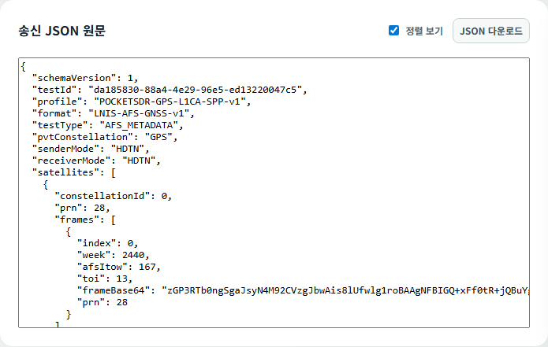
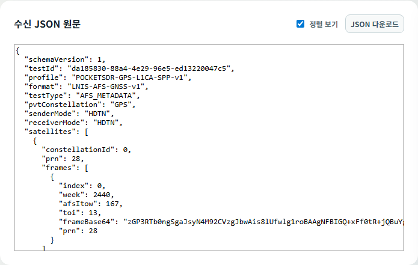
| 기능 | 사용 방법 |
|---|---|
| 원문 창 | 시험 기록을 선택하면 사용 가능한 송신·수신 본문을 해당 화면에 자동 표시합니다. |
| 정렬 보기 | 들여쓰기로 읽기 쉽게 표시합니다. 실제 다운로드 본문을 변경하지 않습니다. |
| JSON 다운로드 | 송신 요청 본문 또는 접수 당시 수신 본문을 내려받습니다. 과거 정규화 저장본이면 안내 문구를 확인합니다. |
| 검증 실패 수신 | 수신 원문을 보관해 거절 사유를 확인할 수 있습니다. 시험 식별이 안 되는 요청은 관리자 수신 원문 목록에서 확인합니다. |
원문과 로그 · 42
로그 상세·다운로드·전체화면
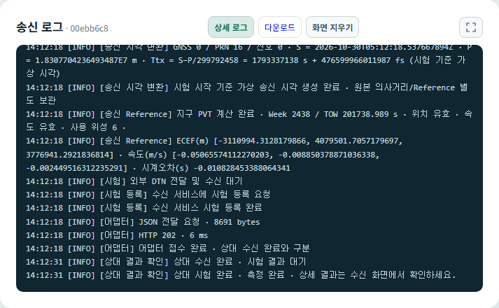
| 조작 | 동작 |
|---|---|
| 상세 로그 | 일반 상태 메시지와 계산 근거·단계별 상세 기록의 표시를 전환합니다. |
| 다운로드 | 선택한 시험의 저장 로그를 내려받습니다. |
| 화면 지우기 | 브라우저 표시를 지웁니다. DB에 보관된 시험 로그를 삭제하지 않습니다. |
| 전체화면 아이콘 | JSON 창과 분리해 로그 영역을 화면 전체로 확대합니다. 버튼 또는 Esc로 복귀합니다. |
| 송신 / 수신 구분 | 송신은 입력·Reference·전송 준비·접수, 수신은 접수·복원·지연·PVT 근거를 확인합니다. |
원문과 로그 · 43
로그를 이용한 장애 전달
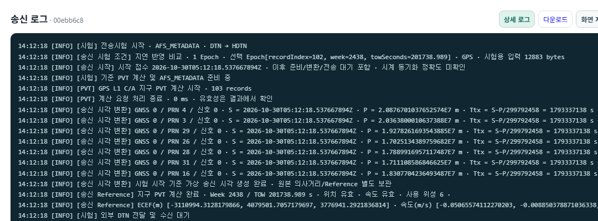
담당자에게는 시험 ID, 시험 유형, 경로, 시작 시각, 실패 단계, 마지막 INFO와 첫 WARN/ERROR, 관련 JSON을 함께 전달합니다. 화면 캡처만 보내기보다 원문과 로그 다운로드를 사용합니다.
| 증거 | 확인 목적 |
|---|---|
| S / R / T*ᵢ / P′ᵢ | 공통 지연과 의사거리 계산의 시각·단위·수식을 확인합니다. |
| HTTP 메서드·URL·상태 | 어느 IP·포트·API에서 오류가 발생했는지 확인합니다. 상대 응답 본문도 함께 봅니다. |
| 파일 경로·크기·SHA-256 | I/Q 파일 접근 및 일치 여부를 확인합니다. |
| Reference / 수신 해 / 비교 사유 | 입력 준비 실패, 수신 처리 실패, 비교 자료 부족을 구분합니다. |
장애 대응 · 44
문제 발생 시 확인 순서
| 증상 | 우선 확인 | 후속 담당 |
|---|---|---|
| 화면 접속 불가 | 서비스 기동, IP·포트, Docker 상태, 브라우저 주소 | 설치·운영 담당 |
| COM 포트 없음 / 연결 실패 | 장치 인식, u-center 점유, 속도, Windows 브릿지 상태 | 운영자 → 설치 담당 |
| 파일 적용 실패 | UBX/GRAW 형식, 입력 메시지, 화면 오류 사유 | 운영자 → LNIS 담당 |
| PVT 비교 불가 | GPS L1 관측·SF1~3, 사용 위성, Reference, 음수 지연·시계 변경 | 운영자 → LNIS 담당 |
| 어댑터 400 / 401 / 405 | 요청 본문·응답 내용, 인증 설정, 메서드·전송 API 경로 | LNIS·어댑터 담당 공동 |
| 등록됐으나 본문 미수신 | 어댑터 접수, 라우터·중계·공유 파일 전달, 상대 callback 주소 | 어댑터·망 담당 |
| I/Q 파일 접근 실패 | 수신 경로에서 파일 존재·권한·마운트·크기 | 운영자 → 설치·어댑터 담당 |
| I/Q 처리 지연 | 검증 / RF 추적 / PVT 중 현재 단계와 CPU·디스크 | 운영자 → 설치·LNIS 담당 |
장애 대응 · 45
실제 이력으로 보는 비교 불가와 실패
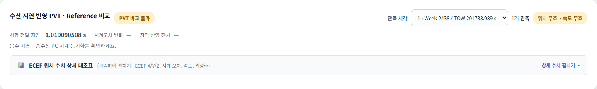
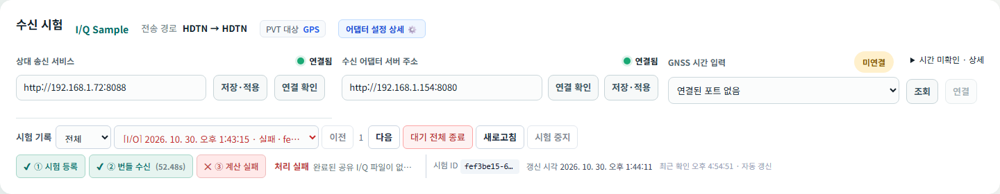
| 사례 | 해석 / 조치 |
|---|---|
| AFS 음수 지연 | 기존 이력에서 R − S가 약 −1.019초였습니다. 전송이 음의 시간에 이뤄졌다는 의미가 아니며 양쪽 기준시각·보정 변경을 확인합니다. |
| I/Q 파일 없음 | 이력의 수신 경로 파일에 접근하지 못했습니다. manifest 수신만으로 .bin 전달이 완료된 것은 아닙니다. |
| 사용자 종료 | 종료는 실패 원인 자동 판정이 아닙니다. 종료 시점까지의 접수·수신 기록으로 구분합니다. |
관리자 부록 · 46
데이터 관리 접속과 조회
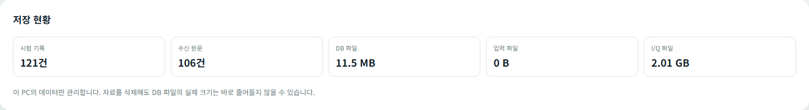
- 관리할 PC의 /lnis/data-manager에 접속합니다. 상단의 데이터 관리 아이콘으로도 접근할 수 있습니다.
- 페이지 상단이 송신 PC인지 수신 PC인지 확인합니다. 이 화면은 접속한 PC의 자료만 관리합니다.
- 시험 기록에서 날짜·상태·시험 ID 일부로 조회합니다.
- 수신 원문·파일에서는 자료 종류를 선택해 수신 기록·입력·I/Q 파일을 조회합니다.
- 이전·다음으로 페이지를 이동하고 필요한 자료의 상세를 엽니다.
| 저장 현황 | 의미 |
|---|---|
| 시험 기록 / 수신 원문 | 로컬 DB에 저장된 해당 자료 건수 |
| DB 파일 | DB의 물리 파일 크기. 자료 삭제 직후 줄어들지 않을 수 있습니다. |
| 입력 / I/Q 파일 | 관리 대상 파일의 보관 용량. 시험 건수와 일대일 대응하지 않을 수 있습니다. |
관리자 부록 · 47
시험·수신 원문·파일 상세
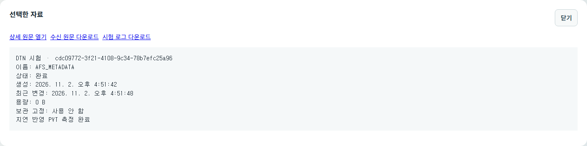
| 기능 | 사용 방법 / 확인 내용 |
|---|---|
| 상세 | ID, 상태, 생성·갱신 시각, 메시지, 연관 자료와 다운로드 링크를 확인합니다. |
| 보관 고정 | 삭제·자동 정리에서 보호할 자료를 고정합니다. 해제 전 연관 자료와 보관 목적을 확인합니다. |
| 수신 원문 | 시험과 연결되지 않거나 검증 실패한 요청도 상태·메시지와 함께 확인합니다. |
| 입력 / I/Q 파일 | 생성 시각·용량·사용 여부를 확인합니다. I/Q 파일 다운로드는 대용량이므로 저장 공간을 확인합니다. |
| 파일 사용 관계 | 진행 중이거나 다른 시험에서 공유하는 자료는 삭제 제한 대상일 수 있습니다. |
관리자 부록 · 48
자료 선택 삭제
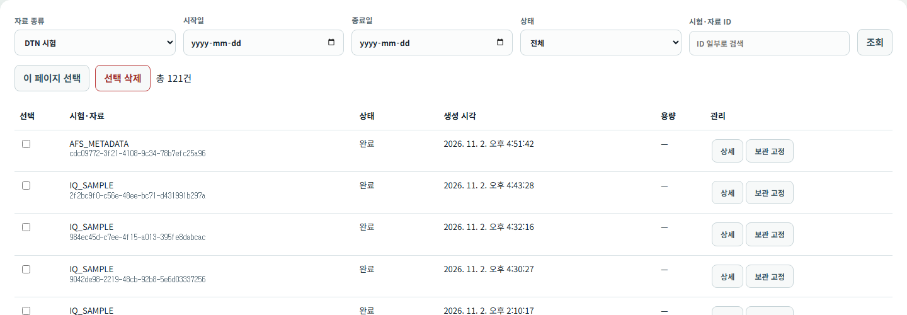
- 종류·기간·상태·ID로 삭제 범위를 먼저 좁힙니다.
- 행을 선택합니다. 이 페이지 선택은 현재 페이지에서 선택 가능한 행을 대상으로 합니다.
- 선택 삭제를 눌러 삭제 예정 항목과 제외 사유를 확인합니다.
- ID·건수·연관 자료·보관 고정 여부를 검토한 뒤 확인합니다. 취소하면 삭제하지 않습니다.
- 처리 후 삭제·실패·제외 건수를 확인하고 필요한 경우 다시 조회합니다.
문서 촬영에서는 운영 자료를 삭제하거나 삭제 확인 요청을 생성하지 않았습니다. 확인 대화상자 이후의 절차는 현재 기능에 근거한 설명입니다.
관리자 부록 · 49
보관 기간과 자동 정리
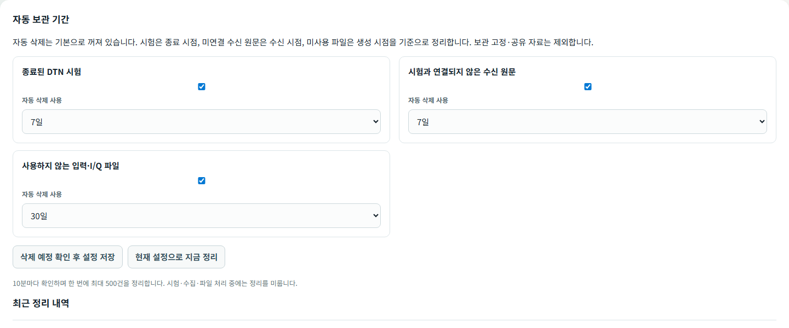
| 대상 | 기간 계산 기준 | 자동 제외 |
|---|---|---|
| 종료된 DTN 시험 | 시험 종료 시점 | 진행 중·보관 고정 등 보호 자료 |
| 시험과 연결되지 않은 수신 원문 | 수신 시점 | 시험 연결·보관 고정 등 보호 자료 |
| 사용하지 않는 입력·I/Q 파일 | 파일 생성 시점 | 사용 중·공유·보관 고정 등 보호 파일 |
대상별 자동 삭제 사용 여부와 7일 / 30일 / 90일 / 직접 입력(1~3,650일)을 정합니다. 삭제 예정 확인 후 설정 저장에서 대상을 검토한 후 적용합니다. 현재 설정으로 지금 정리도 예정 대상을 확인하고 실행합니다.
관리자 부록 · 50
기동·종료·업데이트와 백업
| 환경 / 작업 | 절차 |
|---|---|
| Windows 기동 | 배포 폴더의 START.cmd를 실행합니다. Docker/WSL 및 Windows 직렬 브릿지 상태를 확인한 뒤 각 역할 URL에 접속합니다. |
| Windows 종료 | 배포 폴더의 STOP.cmd를 사용합니다. 수신 대기·진행 시험을 종료할지 먼저 결정합니다. |
| Linux 기동 / 종료 | 배포 폴더에서 docker compose up -d / docker compose down을 사용합니다. 볼륨 삭제 옵션은 사용하지 않습니다. |
| 설정 변경 | 노드 역할·주소·인증·I/Q·브릿지 설정을 검토한 뒤 재기동 적용이 필요한 항목을 반영합니다. |
| 업데이트 | 기존 .env, DB, 입력·I/Q 파일과 공유 폴더를 보존합니다. 오래된 대기 시험·호환 규격을 확인한 뒤 배포 절차를 따릅니다. |
| 백업 | 설정 파일과 DB·입력·I/Q 등 필요한 데이터를 함께 보관합니다. DB 파일 복사는 서비스를 정상 종료한 상태에서 수행합니다. |
| 복구 | 같은 배포 버전·설정·파일 경로 관계를 확인한 뒤 복구합니다. DB만 복원하고 연결 파일을 누락하지 않도록 합니다. |
관리자 부록 · 51
다른 PC 설치 시 확인할 설정
| 환경 변수 | 용도 / 확인 사항 |
|---|---|
| LNIS_NODE_ROLE / LNIS_SERVER_PORT | sender 또는 receiver / 각 노드 서비스 포트 |
| LNIS_NODE_BASE_URL / LNIS_NODE_PEER_URL | 자신의 접근 가능한 서비스 주소 / 상대 LNIS 서비스 주소 |
| dtn_adapter | 이 PC가 연결할 어댑터 기본 주소. http://IP:포트 형식 |
| LNIS_NODE_MANAGEMENT_TOKEN | LNIS 노드 간 관리 요청 인증. 양쪽의 합의된 값 사용 |
| LNIS_DTN_SEND_TOKEN / LNIS_DTN_RECEIVE_TOKEN | 외부 어댑터 요청 인증 / 수신 API 인증. 실제 값은 문서에 기록하지 않음 |
| LNIS_IQ_ENABLED | I/Q 기능 사용 여부. 배포 예제의 초기값은 false |
| LNIS_IQ_HOST_PATH | 어댑터에서 읽는 호스트 파일 경로. 컨테이너 공유 폴더와 같은 파일인지 확인 |
| LNIS_SERIAL_BRIDGE_PORT / BIND / HOST | Windows 직렬 브릿지 연결. 설치 환경에서 포트 충돌·WSL 접근 경로 확인 |
| LNIS_DB_PASSWORD | DB 인증 설정. 기존 DB와 일치 여부 확인 |
| LNIS_HTTP_LOG_LEVEL | HTTP 로그 상세 수준. 반복 조회·본문 상세가 필요한 기간에만 조정 |
관리자 부록 · 52
Docker 로그 확인
# 배포 폴더에서 실행 docker compose ps docker compose logs --tail 100 -f node # 컨테이너 이름으로 조회 docker logs --tail 100 -f <컨테이너-이름>
| 로그 | 확인 방법 |
|---|---|
| INFO | 시험 시작·전송·수신·계산 및 화면 상세 로그의 주요 기록을 확인합니다. |
| WARN / ERROR | 실패·비정상 응답·계산 조건 문제를 확인합니다. 수준을 낮추어 숨기지 않습니다. |
| DEBUG | 주기 조회와 HTTP 상세 진단이 필요한 경우 관리자가 사용합니다. 평상시 반복 요청 기록과 구분합니다. |
| HTTP 기록 | IN/OUT, 요청 ID·추적 ID, 메서드, 상대 IP·포트·URL, 상태, 시간과 필요한 본문을 확인합니다. |
| 시간 표기 | 로그 시각대·PC 시계·서비스 보정 시각을 구분합니다. 브라우저 표시 시각과 UTC 로그 문자열을 숫자만으로 비교하지 않습니다. |
실패한 시험의 ID와 시작 시각을 기준으로 양쪽 노드 및 어댑터 기록을 모읍니다. HTTP 오류를 조사할 때 요청 본문·응답 본문·대상 주소를 함께 확인합니다.
참고 · 53
구조·동작 안내 화면 사용
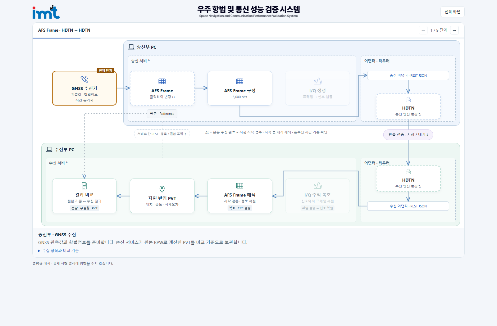
| 조작 | 동작 / 확인 내용 |
|---|---|
| 접속 | 시험 화면 좌측의 작은 안내 아이콘 또는 /dtn-intro 주소로 엽니다. 로고는 해당 노드의 시험 화면으로 돌아가는 링크입니다. |
| 데이터 아이콘 | GNSS RAW → AFS Frame → I/Q Sample 경로를 바꿔 확인합니다. |
| DTN/HDTN 아이콘 | 송신·수신 라우터 엔진 표시를 전환합니다. LNIS 운영 설정을 저장하지 않습니다. |
| 이전 / 다음 화살표 및 방향키 | 단계를 수동 이동합니다. 현재 단계의 애니메이션은 반복 재생됩니다. |
| 단계 설명 / 하단 참고 | 서비스·어댑터 역할, 교환 데이터, 지연·PVT 계산과 결과 확인 위치를 읽습니다. |
참고 · 54
용어와 단위
| 용어 | 뜻 |
|---|---|
| Epoch | 동일 관측 시점의 여러 위성·신호 측정 묶음 |
| RAWX / SFRBX | 원시 관측 메시지 / 방송 항법 메시지 word를 담은 UBX 메시지 |
| PRN | 확산 신호 식별 번호. GPS L1 C/A의 위성 표시는 해당 PRN과 대응 |
| Ephemeris / LNAV | 위성 궤도·시계 정보 / GPS 방송 항법 메시지 |
| 의사거리 / Doppler / C/N₀ | 시간 오프셋을 포함한 거리 관측(m) / 주파수 변화(Hz) / 신호 품질(dB-Hz) |
| PVT / Reference | 위치·속도·시간 해 / 원본 관측으로 계산한 비교 기준 |
| ECEF / ENU | 지구 중심 고정 좌표계 / 기준점 주변 동·북·위 방향 좌표 |
| Clock Bias | GNSS 계산기가 추정하는 수신기 시간 오프셋(s) |
| AFS / SB | Augmented Forward Signal / 그 프레임의 subframe |
| I/Q / RF | 복소 기저대역 신호 샘플 / 신호 추적과 관련된 무선 주파수 처리 |
| testId / SHA-256 | 시험 식별 UUID / 파일·자료 바이트의 해시 |
| Bytes / MB / GB / ms | 바이트 / 10⁶ Bytes / 10⁹ Bytes / 10⁻³초. MiB·GiB는 2진 단위 |
참고 · 55
시험 결과 기록 항목
| 분류 | 기록할 항목 |
|---|---|
| 시험 조건 | 시험 ID, 유형, 경로, 선택 Epoch(Week/TOW), 입력 파일·I/Q 파일, 어댑터 요청 설정 |
| 시각 조건 | 송수신 시각 원천·보정 상태, 시험 중 시계 변경 여부, 시작 S·본문 수신 R |
| 전송 결과 | 어댑터 접수 응답, 수신 여부·시각, 파일/데이터 일치 상태, 실패 사유 |
| PVT 비교 | Reference·수신 해의 위치·속도·Clock Bias, 유효성, 사용 위성 수 |
| 공통 지연 | Δt, Clock Bias 증가량, 두 값의 잔차, 위치·속도 차이 |
| 보관 자료 | 송신 JSON, 수신 JSON, 양쪽 상세 로그, 필요한 결과 화면 캡처 |
| 판정 유의 | 합격 기준은 시험 목적에 맞춰 별도로 정합니다. 측정 완료를 자동 합격으로 기록하지 않습니다. |
문서 확인 기준
화면은 2026년 11월 2일에 촬영했습니다. 소스 기준은 621e8d7입니다. AFS·I/Q 완료·비교 불가·실패·종료 이력과 현재 설정·데이터 관리 화면을 사용했습니다. 주소와 식별자는 실제 값입니다.